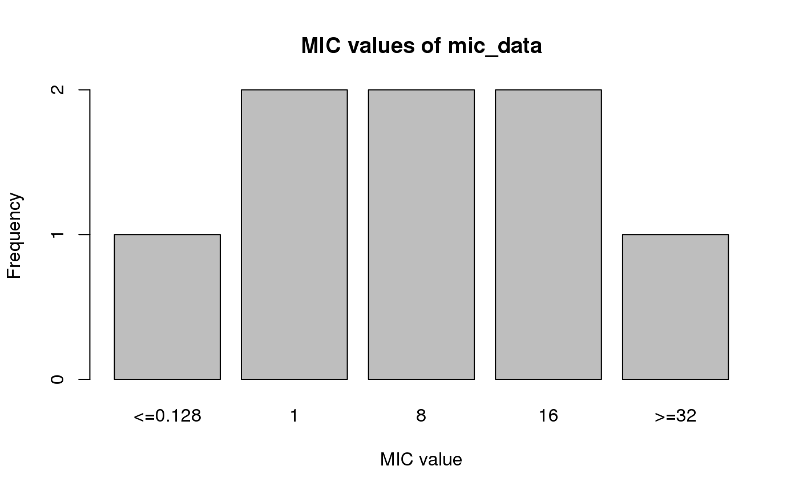

as.mic.RdThis transforms a vector to a new class mic, which is an ordered factor with valid MIC values as levels. Invalid MIC values will be translated as NA with a warning.
as.mic(x, na.rm = FALSE) is.mic(x)
| x | vector |
|---|---|
| na.rm | a logical indicating whether missing values should be removed |
Ordered factor with new class mic
#> Warning: 1 results truncated (11%) that were invalid MICs: "1.00"is.mic(mic_data)#> [1] TRUE# this can also coerce combined MIC/RSI values: as.mic("<=0.002; S") # will return <=0.002#> Class 'mic' #> [1] <=0.002plot(mic_data)#> Warning: Factor `mic` contains implicit NA, consider using `forcats::fct_explicit_na`barplot(mic_data)#> Warning: Factor `mic` contains implicit NA, consider using `forcats::fct_explicit_na`freq(mic_data)#> #> #> **Frequency table** #> #> #> | |Item | Count| Percent| Cum. Count| Cum. Percent| #> |:--|:-------|-----:|-------:|----------:|------------:| #> |1 |1 | 2| 25.0%| 2| 25.0%| #> |2 |8 | 2| 25.0%| 4| 50.0%| #> |3 |16 | 2| 25.0%| 6| 75.0%| #> |4 |<=0.128 | 1| 12.5%| 7| 87.5%| #> |5 |>=32 | 1| 12.5%| 8| 100.0%| #> #>